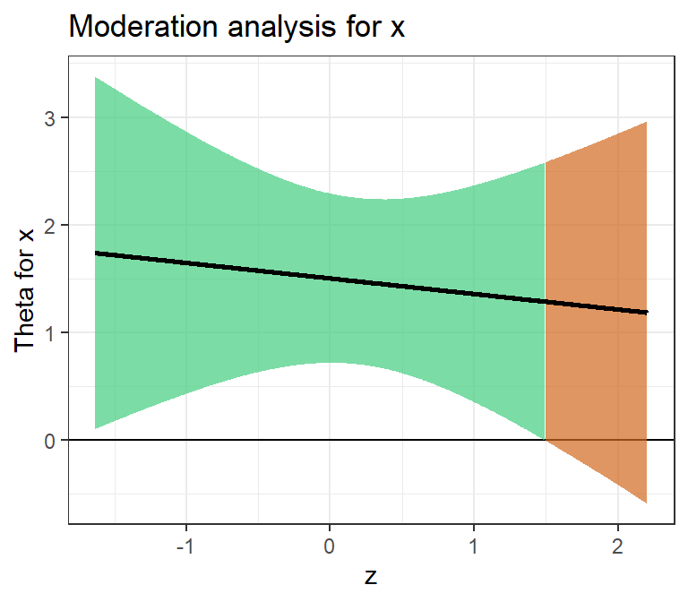
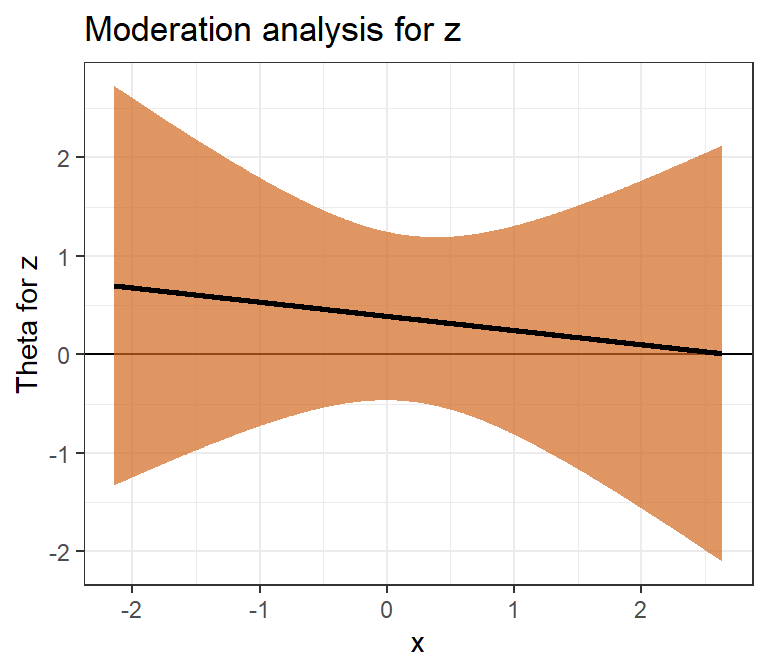
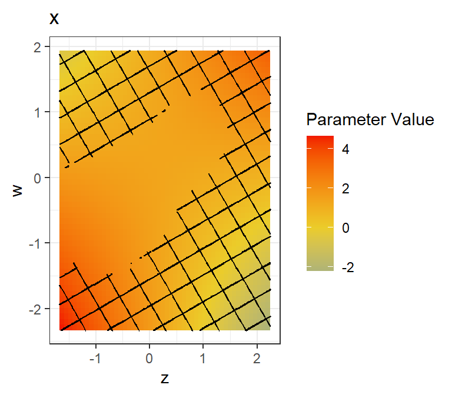
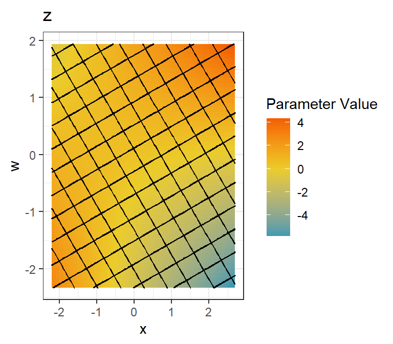
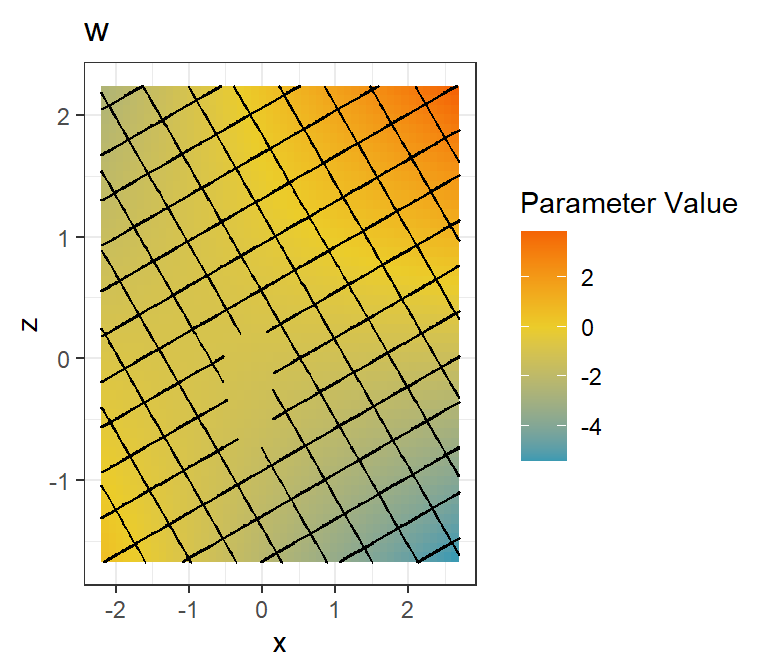
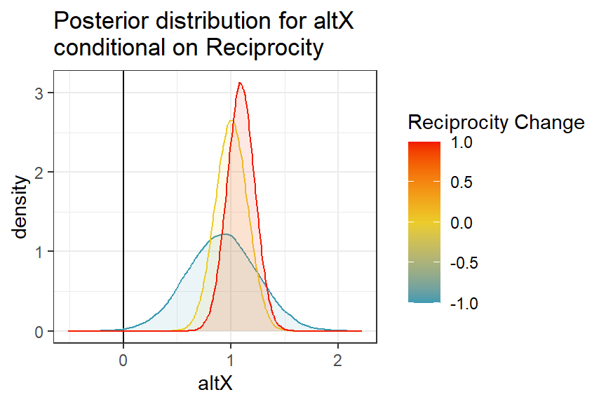
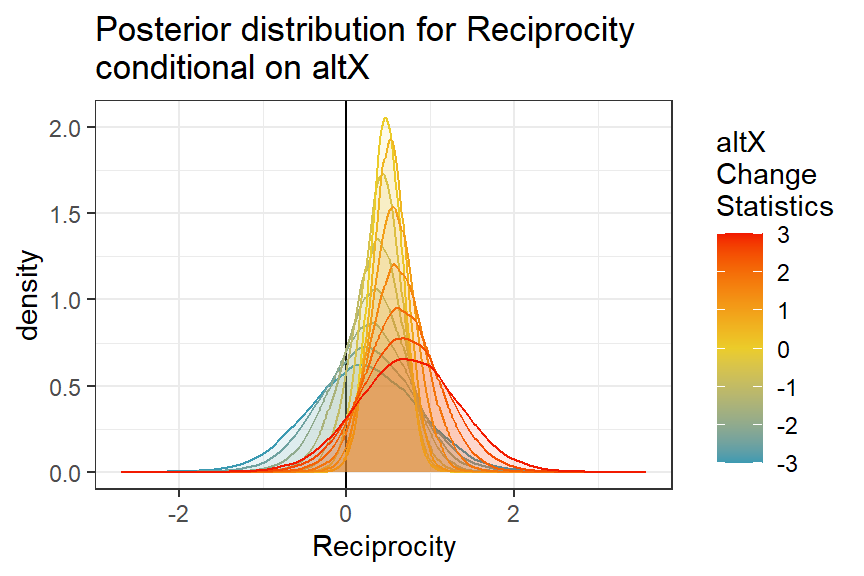
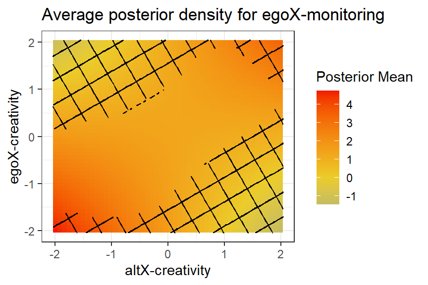

library(int3ract)
set.seed(1402)
dat <- data.frame(x = rnorm(100),
z = rnorm(100),
w = rnorm(100))
dat$y = dat$x + 0.5 * dat$z + -.5 * dat$w + 0.5 * dat$x *
dat$z * dat$w + rnorm(100,sd = 4)
mod2 <- lm(y ~ x * z, data = dat)
jn2 <- JNK_lm(mod2,
theta_1 = "x",
theta_2 = "z",
alpha = 0.05)int3ract: Johnson–Neyman Technique and Its Three-Way Extension for Frequentist and Bayesian Models in R
Abstract
Interaction effects are ubiquitous in applied statistical modelling, yet their meaningful interpretation remains challenging. The classic Johnson–Neyman (JN) technique (Johnson and Neyman 1936) addresses this challenge for two-way interactions by identifying the regions of a moderator’s range over which a focal effect is and is not statistically significant. The int3ract package for R implements the JN technique and its three-way extension (the Johnson–Neyman–Krause, or JNK, technique) for both frequentist and Bayesian models. The core function JNK_int() can be applied to multiplicative interactions from (virtually) any model family. Dedicated wrappers (JNK_lm() and JNK_siena()) streamline the workflow for models fitted via lm()/glm() and RSiena’s siena(), respectively. For Bayesian Stochastic Actor-Oriented Models (SAOMs) estimated with multiSiena, the function JNSienaBayes() produces conditional posterior distributions. For two-way interactions, classic shaded confidence-band plots are created that visually demarcate significant and non-significant regions along the moderator range; three-way interactions yield colour-gradient heatmaps with optional crosshatch overlays for non-significant regions. The package is designed to encourage richer, region-specific reporting of interaction effects in place of the conventional single-slope spotlight approach.
Keywords
interaction effects, Johnson-Neyman technique, moderation analysis, SAOM, Bayesian, R
1 Introduction
Multiplicative interaction terms allow researchers to examine whether the relationship between a predictor \(X\) and an outcome \(Y\) depends on the value of one or more additional variables—the so-called moderators. Interpreting such interactions by inspecting the sign and significance of the interaction coefficient alone is, however, insufficient and potentially misleading (Bauer and Curran 2005; Preacher, Curran, and Bauer 2006). The key insight behind the Johnson–Neyman (JN) technique is that instead of evaluating the focal effect at a small number of selected moderator values (often referred to as “spotlight” or “simple-slope”), one can derive the entire region of the moderator’s distribution over which the focal effect is statistically distinguishable from zero (Johnson and Neyman 1936; Potthoff 1964).
Originally proposed in the context of the analysis of covariance (Johnson and Neyman 1936), the JN technique was later adapted for regression (Potthoff 1964) and updated by Bauer and Curran (2005), whose formulation is closest to what int3ract implements. Several R packages already address the two-way JN case, for instance, interactions (Long 2019) and jtools (Long 2020). The contribution of int3ract is threefold.
Three-way interactions. The package provides a complete implementation of the JNK technique for three-way multiplicative interactions, producing a heatmap over the two-dimensional moderator grid rather than a single-axis ribbon plot.
Model-agnostic frequentist engine. The internal function
JNK_int()requires only a coefficient vector and the relevant sub-matrix of the parameter covariance matrix. It therefore applies to any frequentist model that produces these quantities—ordinary least squares, generalised linear models, mixed-effects models, survival models, or Stochastic Actor-Oriented Models—without modification.Bayesian SAOMs. The function
JNSienaBayes()adapts the technique to the posterior distribution rather than the sampling distribution, producing density plots (two-way) and posterior-mean heatmaps with Bayesian \(p\)-value overlays (three-way) for models estimated with multiSiena.
The remainder of the paper is organised as follows. Section 2 reviews the statistical background of the JN technique and its three-way extension. Section 3 describes the package architecture. Section 4 and Section 5 illustrate the frequentist and Bayesian workflows with worked examples. Section 6 discusses graphical customisation. Section 7 concludes.
2 Statistical Background
2.1 The Two-Way Johnson–Neyman Technique
Consider the linear model
\[ Y_i = \beta_0 + \beta_1 X_i + \beta_2 M_i + \beta_3 X_i M_i + \varepsilon_i, \tag{1}\]
where \(X\) is the focal predictor, \(M\) is the moderator, and \(\beta_3\) is the interaction coefficient. The simple slope of \(Y\) with respect to \(X\) at a given value \(m\) of the moderator is
\[ \hat{\theta}_X(m) = \hat{\beta}_1 + \hat{\beta}_3 \, m. \tag{2}\]
Its sampling variance follows from the delta method:
\[ \widehat{Var}\bigl[\hat{\theta}_X(m)\bigr] = \widehat{Var}(\hat{\beta}_1) + 2m\,\widehat{Cov}(\hat{\beta}_1, \hat{\beta}_3) + m^2\,\widehat{Var}(\hat{\beta}_3). \tag{3}\]
The two-way JN regions are the set of moderator values \(m\) for which the two-sided \(z\)-test
\[ z(m) = \frac{\hat{\theta}_X(m)} {\sqrt{\widehat{Var}[\hat{\theta}_X(m)]}} \]
satisfies \(|z(m)| > z_{\alpha/2}\), where \(z_{\alpha/2}\) is the \((\alpha/2)\)-upper quantile of the standard normal distribution.
The symmetry of Equation 1 implies that the roles of \(X\) and \(M\) are interchangeable: the simple slope of \(Y\) on \(M\) moderated by \(X\) is \(\hat{\beta}_2 + \hat{\beta}_3 \, x\), with an analogous variance formula. int3ract therefore always produces two JN plots per two-way interaction and three for three-way interactions – one for each variable acting as the focal predictor.
2.2 The Three-Way Extension
When a third variable \(W\) enters as an additional moderator, the full three-way interaction model is
\[ \begin{aligned} Y_i = \; & \beta_0 + \beta_1 X_i + \beta_2 M_i + \beta_3 W_i + \beta_4 X_i M_i + \beta_5 X_i W_i + \beta_6 M_i W_i \\ & + \beta_7 X_i M_i W_i + \varepsilon_i. \end{aligned} \tag{4}\]
The conditional effect of \(X\) given \(M\) and \(W\) is
\[ \theta_X(m, w) = \beta_1 + \beta_4 m + \beta_5 w + \beta_7 mw, \tag{5}\]
and the corresponding standard error is obtained via the multivariate delta method:
\[ \begin{aligned} \widehat{Var}\bigl[\hat{\theta}_X(m,w)\bigr] = \; & \widehat{Var}_{\beta_1} + m^2 \widehat{Var}_{\beta_4} + w^2 \widehat{Var}_{\beta_5} + (m w)^2 \widehat{Var}_{\beta_7} \\ & + 2m \widehat{Cov}(\beta_1,\beta_4) + 2w \widehat{Cov}(\beta_1,\beta_5) + 2m w \widehat{Cov}(\beta_1,\beta_7) \\ & + 2m w \widehat{Cov}(\beta_4,\beta_5) + 2m^2 w \widehat{Cov}(\beta_4,\beta_7) \\ & + 2m w^2 \widehat{Cov}(\beta_5,\beta_7). \end{aligned} \tag{6}\]
Because the significance region is now two-dimensional, it cannot be depicted as a simple interval on a line. int3ract instead renders a heatmap of conditional point estimates \(\hat{\theta}_X(m, w)\) using a diverging colour scale, and superimposes a crosshatch pattern over cells where the null hypothesis \(\theta_X = 0\) should be rejected given the chosen \(\alpha\)-threshold (default: threshold = 0.05).
3 Package Architecture
The package is organised into four layers, summarised in Table 1.
| Entry point | Model class | Core engine |
|---|---|---|
JNK_lm() |
lm, glm |
JNK_int() |
JNK_siena() |
sienaFit (frequentist) |
JNK_int() |
JNSienaBayes() |
multiSiena (Bayesian) |
jnb_support2(), jnb_support3() |
JNK_int() |
any (generic) | parFun(), seFun() |
Utility layer (utils.R).
parFun() and seFun() implement Equation 5 and Equation 6.
Core frequentist engine (JNK_int()).
The function JNK_int() accepts name (character vector of variable names), coefs (named numeric vector of model coefficients), covar (the corresponding covariance sub-matrix), and vals (a list of moderator value ranges). When a 2-way interaction is analysed, it returns two ribbon plots and two data frames; when a 3-way interaction, it returns three heatmaps together with the underlying matrices of point estimates, standard errors, \(p\)-values, and significance indicators.
Crucially, JNK_int() is model-agnostic. Any researcher who can extract a coefficient vector and covariance matrix from their model (whether fitted by lm(), glmer(), coxph(), or any other estimator) can call JNK_int() directly. The function can also be applied to Bayesian estimations, if one would reduce the posteriors to their mean and covariance structure.
Frequentist wrappers.
JNK_lm() extracts coefficients and vcov() from an lm or glm object and constructs the interaction-term names following \(\textsf{R}\)’s standard : convention before delegating to JNK_int().
JNK_siena() extracts $theta and $covtheta from a sienaFit object. Because RSiena effects are harder to index by name1, the user supplies the indices for all main effects and interaction terms.
Bayesian engine (JNSienaBayes(), jnb_support2(), jnb_support3()).
For Bayesian SAOMs there is no single-point estimate or analytic covariance matrix. Instead, conditional posteriors will be used. JNSienaBayes() handles burn-in removal and thinning, detects whether each parameter was estimated as fixed (\(\eta\)) or random (\(\mu\)), and routes to jnb_support2() for 2-way interactions or jnb_support3() for 3-way interactions.
For two-way interactions, jnb_support2() computes the conditional posterior draws
\[ \tilde{\theta}_X^{(s)}(m) = \theta^{(s)}_X + \theta^{(s)}_{XM} \cdot m \]
at each sampled iteration \(s\) and moderator value \(m\), yielding a full conditional posterior distribution. These are visualised as overlapping density curves coloured by moderator value, and summarised by the posterior mean, posterior standard deviation, and Bayesian \(p\)-value \(\Pr(\tilde{\theta}_X > 0 \mid \text{data}, \text{model}, \text{prior})\).
For three-way interactions, jnb_support3() extends this to the grid \((m, w)\), producing heatmaps of both the posterior mean and the Bayesian \(p\)-value, each overlaid with a crosshatch on cells outside the user-specified “significance” thresholds.
4 Frequentist Usage
4.1 Two-Way Interaction with lm
The simplest entry point is JNK_lm() applied to an ordinary least-squares model.

x as a function of the moderator z.

z as a function of the moderator x.
x and z (\(\alpha = 0.05\)). The ribbon shows pointwise 95% confidence bands for the conditional effect; green shading indicates regions where the effect is statistically significant, chocolate where it is not.
The returned list jn2 contains $param_table, a list of two data frames (one per each variable involved in the interactions) with columns for the moderator values (mod_vals), conditional parameter, its standard error, and \(p\)-value (theta_vals, theta_se, and theta_p), and a logical whether it is significant given the chosen threshold; and $plots, a list of two ggplot2 objects.
In each plot the ribbon is filled with sig_color (default 'seagreen3') where \(|z| > z_{\alpha/2}\) and with non_sig_color (default 'chocolate') elsewhere.
4.2 Three-Way Interaction with lm
mod3 <- lm(y ~ x * z * w, data = dat)
jn3 <- JNK_lm(mod3,
theta_1 = "x",
theta_2 = "z",
theta_3 = "w",
range_size = 50)
x across the (z, w) moderator grid.

z across the (x, w) moderator grid.

w across the (x, z) moderator grid.
x, z, and w (range_size = 50, \(\alpha = 0.05\)). Each cell shows the conditional point estimate of the focal effect across the two-dimensional moderator grid; the diverging colour scale runs from blue (negative) through yellow (zero) to red (positive). Crosshatched cells indicate regions where the conditional effect is not statistically significant.
Setting range_size = 50 produces a \(50 \times 50\) grid for each of the three heatmaps (i.e., \(3 \times 2{,}500\) conditional effect evaluations). When all three moderator ranges contain fewer than eight distinct values, the point estimate is printed in each cell; otherwise only the colour gradient communicates the magnitude. The ranges for each variable are by default extracted from the lm/glm object but can also be supplied directly, which is always necessary for JNK_int() and JNK_siena() (see the code chunk below).
4.3 Stochastic Actor-Oriented Models (JNK_siena())
SAOMs estimated by RSiena’s siena() (formerly siena07()) are the primary application domain for which this package was developed, because interaction effects between network statistics and actor attributes are common yet difficult to interpret (T. A. B. Snijders et al. 2026). The interface mirrors JNK_lm() but uses integer indices referencing the position of each effect in the RSiena effects object2.
# Two-way interaction
x2 <- JNK_siena(res,
theta_1 = 6,
theta_2 = 7,
theta_int_12 = 8,
theta_1vals = -10:10,
theta_2vals = -10:10)
# Three-way extension
x3 <- JNK_siena(res,
theta_1 = 6,
theta_2 = 7,
theta_3 = 5,
theta_int_12 = 8,
theta_int_13 = 10,
theta_int_23 = 9,
theta_int_123 = 11,
theta_1vals = -10:10,
theta_2vals = -10:10,
theta_3vals = 0:6,
range_size = 10)The moderator value ranges (theta_1vals, theta_2vals, theta_3vals) should reflect the empirical support of the corresponding change statistics. By default range_size = 500 equidistant points are drawn from these ranges. The returned tables and plots are named as derived from the model using the `name’ column in the RSiena effects object.
4.4 Direct Use of JNK_int()
Because JNK_int() requires only a coefficient vector and a covariance matrix, it is straightforward to apply it to models not covered by the existing wrappers. For instance, for a mixed-effects model fitted with lme4:
library(lme4)
library(int3ract)
lme_mod <- lmer(y ~ x * z + (1 | group), data = dat)
all_coef <- fixef(lme_mod)
all_vcov <- as.matrix(vcov(lme_mod))
sel <- c("x", "z", "x:z")
JNK_int(name = c("x", "z"),
coefs = all_coef[sel],
covar = all_vcov[sel, sel],
vals = list(range(dat$x), range(dat$z)),
range_size = 1000)The same pattern applies to survival models (survival), ordinal regression (MASS), beta regression (betareg), and any other estimation that that provides parameter estimates and their covariances.
5 Bayesian Usage: JNSienaBayes()
For multi-group Bayesian SAOMs estimated with multiSiena (T. Snijders, Koskinen, and Ripley 2026; Koskinen and Snijders 2023), a series of conditional posterior distributions over the range of the moderator replaces the classic JN-framework. If the moderator range is given explicitly with fewer than eight unique values, distinct colors are used to plot each The function JNSienaBayes() automatically detects whether each required parameter has been estimated as a fixed effect (\(\eta\); shared across groups) or as a random effect (\(\mu\); group-varying, with a hyper-parameter), and extracts the appropriate posterior draws.
The returned object is a named list similar to those returned for frequentist interactions. Each table here contains the posterior mean, posterior SD, Bayesian \(p\)-value (\(\Pr(\tilde{\theta}_X > 0 \mid \text{data}, \text{model}, \text{prior})\)), and 2.5th and 97.5th percentiles of the conditional posterior for each moderator value.
When hyper_only = FALSE and at least one of the involved parameters is randomly varying between groups, JNSienaBayes() additionally loops over all \(G\) groups and produces group-specific plots and tables, returned under the key random_groups_effects. This is useful for assessing heterogeneity of interaction effects across networks. Two additional arguments are helpful when many plots are made: save = TRUE will save each plot with ggsave(). To avoid cluttering your working directory, folder provides the location of a folder where the plots will be stored. If no input is provided, a new folder int3ract JNplots will be created (note that RStudio will ask you in the console whether such a folder is allowed to be created, if it does not exist yet).
For three-way interactions, the call is extended as usual. The thresholds argument (a vector of length 2, e.g., c(0.05, 0.95)) determines which cells of the posterior-mean heatmap are crosshatched: cells whose Bayesian \(p\)-value falls inside the interval \([\mathrm{threshold}_1, \mathrm{threshold}_2]\) are treated as non-significant.
jnb2 <- JNSienaBayes(sbo = my_multiSiena_result,
theta_1 = 4,
theta_2 = 7,
theta_int_12 = 9,
theta_1_vals = c(-1,0,1),
theta_2_vals = seq(-3,3,0.5),
burnIn = 500,
thin = 2,
save = FALSE)

jnb3 <- JNSienaBayes(sbo = my_multiSiena_result,
theta_1 = 4,
theta_2 = 10,
theta_3 = 9,
theta_int_12 = 21,
theta_int_13 = 22,
theta_int_23 = 11,
theta_int_123 = 23,
theta_1_vals = seq(-2, 2, length.out = 50),
theta_2_vals = seq(-2, 2, length.out = 50),
theta_3_vals = seq(-2, 2, length.out = 50),
thresholds = c(0.05, 0.95),
burnIn = 500,
thin = 2)
6 Graphical Output and Customisation
All plots are standard ggplot2 objects (Wickham 2016) and can be further modified using ggplot2’s layer system. The crosshatch pattern for non-significant regions is produced by ggpattern (Stewart 2022). Table 2 documents the colour and pattern parameters shared across all plotting functions. The colours for high, mid, and low point for continuous plots are taken from the Zissou1 palette from the wesanderson package (Ram and Wickham 2023). Direct use of palettes is not supported but users can always overlay their own color palettes post-hoc by calling scale_fill_gradient2()/scale_color_gradient2() (for more and alternatives see ?ggplot2::scale_fill_gradient()).
| Parameter | Description | Default |
|---|---|---|
| sig_color | Ribbon fill for significant regions (2-way) | `seagreen3' |
| non_sig_color | Ribbon fill for non-significant regions (2-way) | `chocolate' |
| line_color | Point-estimate line colour (2-way) | `black' |
| color_low | Low end of diverging fill scale (heatmaps) | `#F05039' |
| color_mid | Midpoint colour of diverging fill scale | `white' |
| color_high | High end of diverging fill scale | `#000066' |
| color_grid | Crosshatch line colour | `black' |
| grid_density | Density of crosshatch lines | 0.01 |
| grid_spacing | Spacing between crosshatch lines | 0.1 |
| color_values | Within-cell text colour (heatmaps, ≤ 7 values) | `grey40' |
| crosshatch_non_sig | If TRUE, crosshatch marks the non-significant region | TRUE |
7 Summary and Outlook
int3ract provides a unified interface for the Johnson–Neyman technique and its three-way extension across a broad class of frequentist and Bayesian models. By exposing the core computation in a single model-agnostic function, JNK_int(), the package invites adoption beyond the two model classes for which dedicated wrappers currently exist. Future development plans include:
- A wrapper for
merModobjects from lme4 to allow for randomly varying interactions. - A consideration for FDR-correction.
- A general Bayesian application
Researchers are encouraged to report not only the JN boundaries but also the full plots as supplementary material, in keeping with calls for more transparent and complete reporting of interaction effects (Simonsohn, Simmons, and Nelson 2020).
8 Dependencies
To give due credit, next to the already listed packages, int3ract also depends on scales, tidyr, and tibble (Wickham, Pedersen, and Seidel 2025; Wickham, Vaughan, and Girlich 2025; Müller and Wickham 2026).
References
Bauer, Daniel J., and Patrick J. Curran. 2005. “Probing Interactions in Fixed and Multilevel Regression: Inferential and Graphical Techniques.” Multivariate Behavioral Research 40 (3): 373–400. https://doi.org/10.1207/s15327906mbr4003_5.
Johnson, Palmer O., and Jerzy Neyman. 1936. “Tests of Certain Linear Hypotheses and Their Applications to Some Educational Problems.” Statistical Research Memoirs 1: 57–93.
Koskinen, Johan H., and Tom A. B. Snijders. 2023. “Multilevel Longitudinal Analysis of Social Networks.” Journal of the Royal Statistical Society, Series A 186: 376–400.
Long, Jacob Scott. 2019. interactions: Comprehensive, User-Friendly Toolkit for Probing Interactions. https://cran.r-project.org/package=interactions.
———. 2020. jtools: Analysis and Presentation of Social Scientific Data. https://cran.r-project.org/package=jtools.
Müller, Kirill, and Hadley Wickham. 2026. Tibble: Simple Data Frames. https://doi.org/10.32614/CRAN.package.tibble.
Potthoff, Richard F. 1964. “On the Johnson–Neyman Technique and Some Extensions Thereof.” Psychometrika 29 (3): 241–56. https://doi.org/10.1007/BF02289721.
Preacher, Kristopher J., Patrick J. Curran, and Daniel J. Bauer. 2006. “Computational Tools for Probing Interactions in Multiple Linear Regression, Multilevel Modeling, and Latent Curve Analysis.” Journal of Educational and Behavioral Statistics 31 (4): 437–48. https://doi.org/10.3102/10769986031004437.
Ram, Karthik, and Hadley Wickham. 2023. Wesanderson: A Wes Anderson Palette Generator. https://doi.org/10.32614/CRAN.package.wesanderson.
Simonsohn, Uri, Joseph P. Simmons, and Leif D. Nelson. 2020. “Specification Curve Analysis.” Nature Human Behaviour 4 (11): 1208–14. https://doi.org/10.1038/s41562-020-0912-z.
Snijders, Tom A. B., Ruth M. Ripley, Krists Boitmanis, Christian Steglich, Nynke M. D. Niezink, Viviana Amati, and Felix Schoenenberger. 2026. Siena - Simulation Investigation for Empirical Network Analysis. Groningen, The Netherlands: University of Groningen. https://www.stats.ox.ac.uk/~snijders/siena/.
Snijders, Tom, Johan Koskinen, and Ruth Ripley. 2026. multiSiena - Simulation Investigation for Multilevel Empirical Network Analysis. Groningen, The Netherlands: University of Groningen. http://www.stats.ox.ac.uk/~snijders/siena.
Stewart, Mike. 2022. ggpattern: ggplot2 Pattern Geoms. https://cran.r-project.org/package=ggpattern.
Wickham, Hadley. 2016. ggplot2: Elegant Graphics for Data Analysis. New York: Springer-Verlag. https://doi.org/10.1007/978-3-319-24277-4.
Wickham, Hadley, Thomas Lin Pedersen, and Dana Seidel. 2025. Scales: Scale Functions for Visualization. https://doi.org/10.32614/CRAN.package.scales.
Wickham, Hadley, Davis Vaughan, and Maximilian Girlich. 2025. Tidyr: Tidy Messy Data. https://doi.org/10.32614/CRAN.package.tidyr.
Footnotes
While effects are identifyable by name, in complex models the same effect can appear multiple times for different dependent variables and/or as different effect types, making it harder on the user to provide accurate input to the
JNK_siena()compared to using the already provided numbering system insiena()outputs.↩︎While each effect in RSiena is named, within a given model, effects are not necessarily identifiable by their name but the same name might appear multiple times for different dependent variables or effect types↩︎